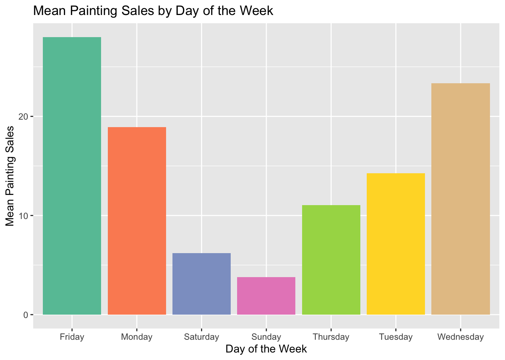
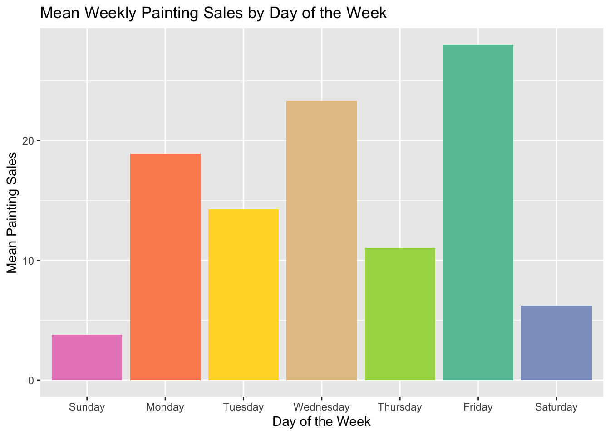
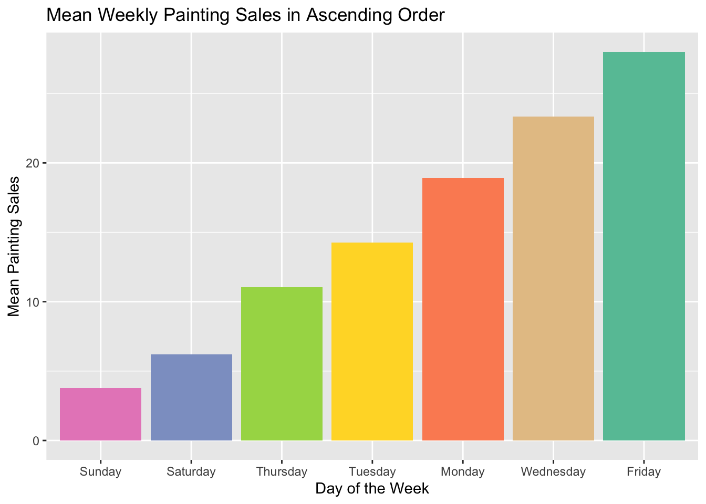
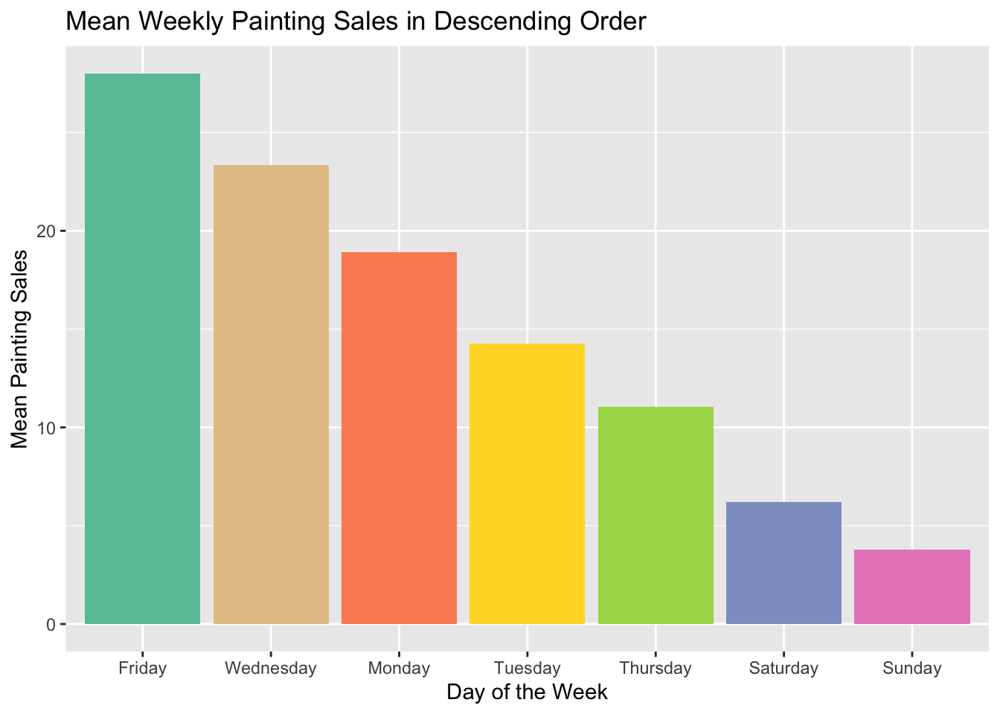
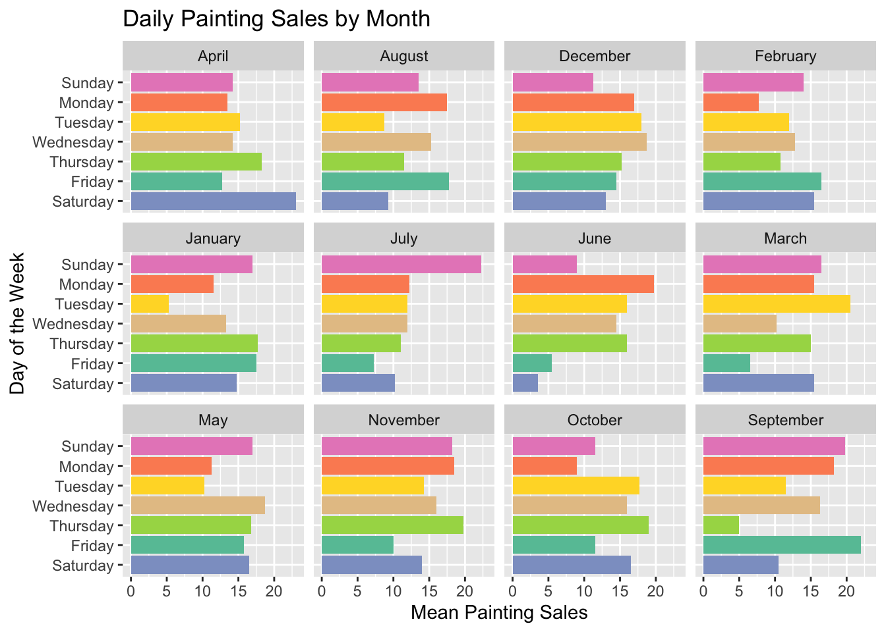
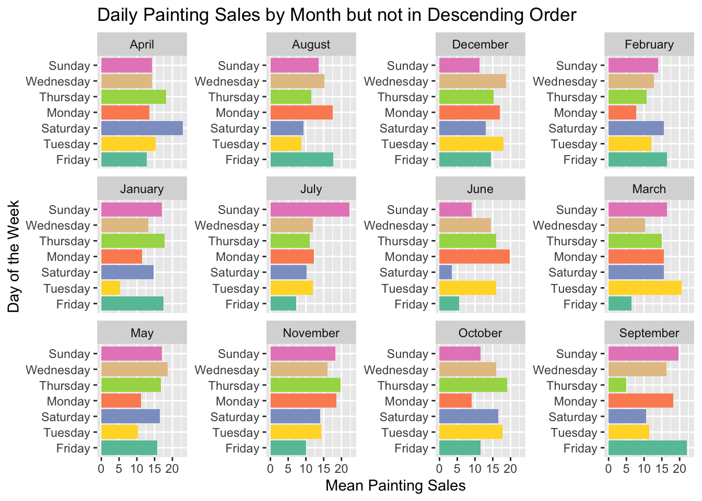
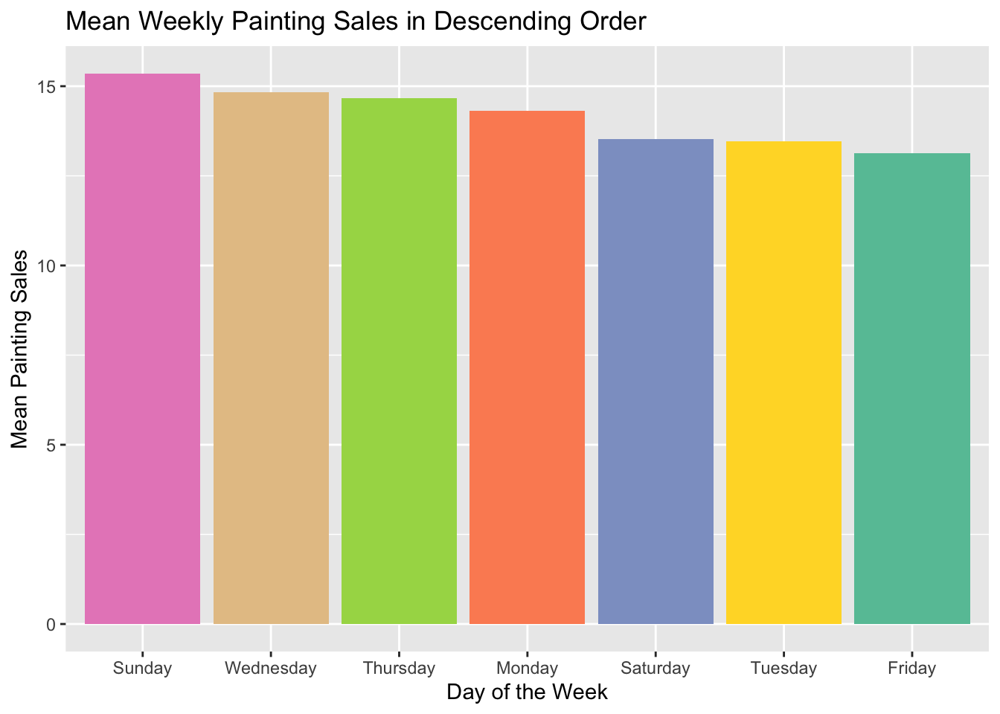
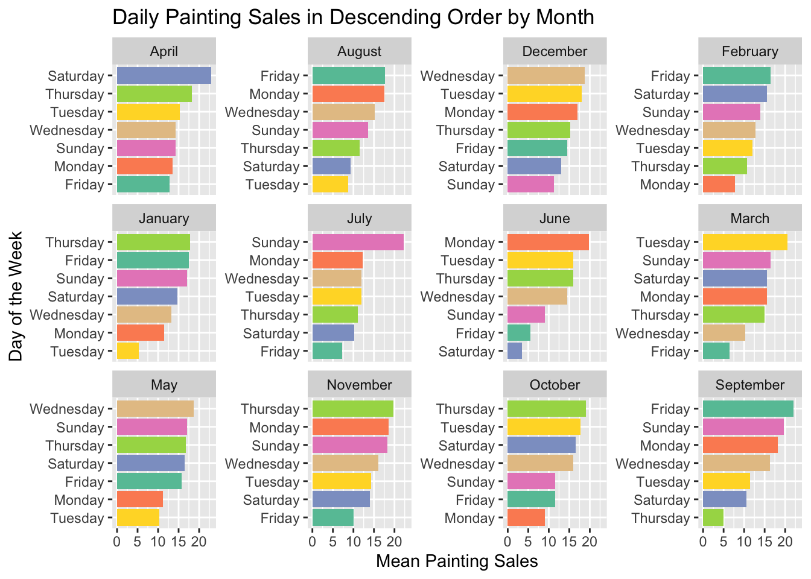
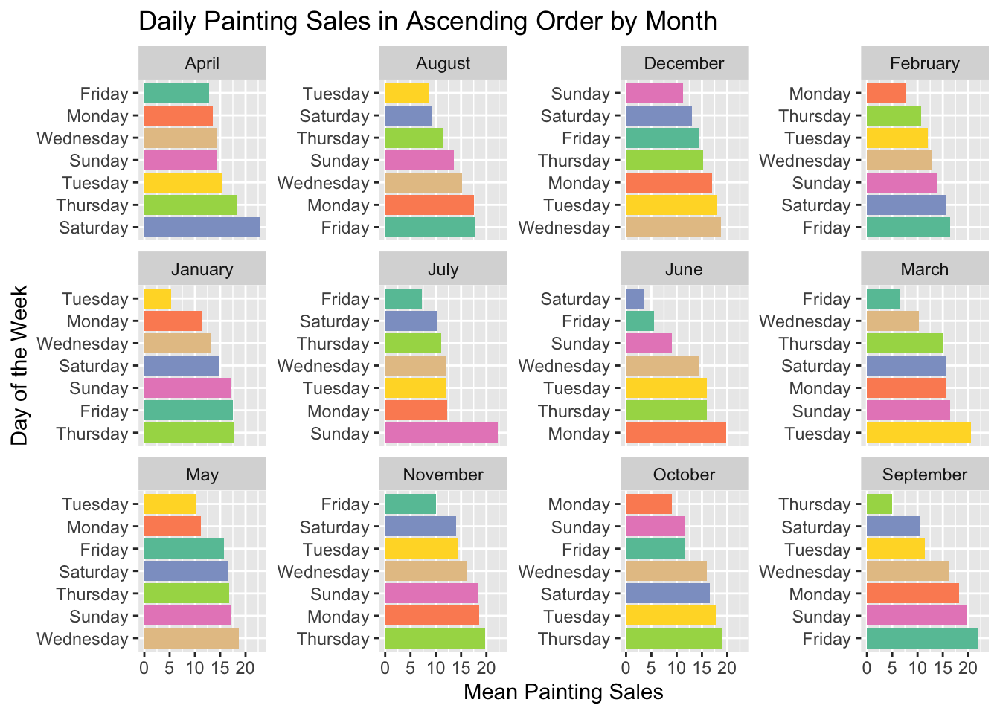
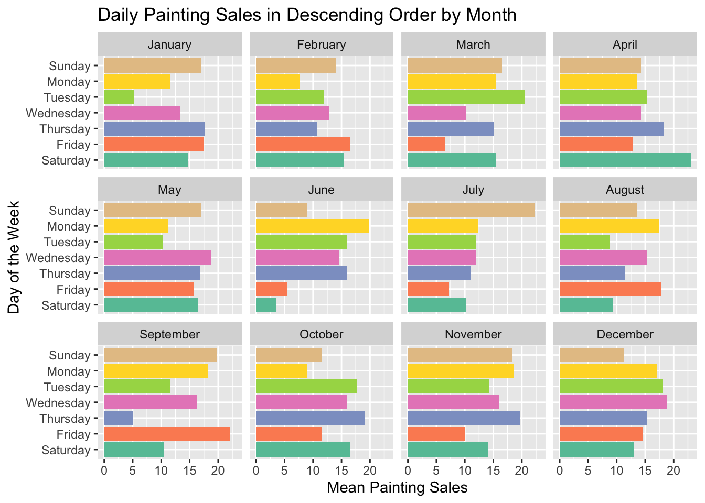

Reordering Bar and Column Charts with ggplot2 in R
Intro
Like grammar in English, the grammar of graphics (ggplot2) can be somewhat confusing at times. Usually you know what you want your chart to look like but you’re not sure exactly how to get there. A common issue is trying to get your discrete axis to show up in the order you want, whether it’s getting your days of the week in order or ordering columns in ascending or descending order.


Creating the Data
As usual, we want to load the tidyverse first since it gives us %>% from magrittr and ggplot2 and everything that comes with it.
The dummy data for this post is painting sales. You’re a starving artist who hasn’t taken any days off selling paintings in the past year and you’re trying to start taking a day to yourself every week. Our data has the day of the month (only 28 days per month), the month, the day of the week, and the number of paintings you sold each day. R has a constant built in for the name of the month, month.name, but not one for the days of the week, so we’ll have to make that ourselves. In addition, we start our week on a Sunday.
set.seed(2022)
days_of_the_week <- c("Sunday", "Monday", "Tuesday", "Wednesday",
"Thursday", "Friday", "Saturday")
sales <- data.frame("dayOfMonth" = rep(1:28, 12),
"month" = rep(month.name, each = 28),
"weekday" = rep(days_of_the_week, 12*4),
"paintings" = round(rnorm(28*12, c(sample(1:28, 7)))))
head(sales, 7) dayOfMonth month weekday paintings
1 1 January Sunday 2
2 2 January Monday 20
3 3 January Tuesday 13
4 4 January Wednesday 23
5 5 January Thursday 10
6 6 January Friday 28
7 7 January Saturday 7The first week’s data shows that we sold the bulk of our paintings on Monday, Wednesday, and Friday, with barely any sales on Sunday and Saturday.
Getting the Days in Order
In the first chart we make, we want to take the average number of sales per day of the week. To do that, we group_by(weekday) and then summarise the mean(paintings) as a new variable, weekdaySales. In the ggplot chain, we set the chart and axis titles with labs and the color palette with scale_fill_brewer. In aes in geom_bar, we want the weekday on the x axis and weekdaySales on the y axis. To add some color, we set fill = weekday. Outside of the aes but still in geom_bar, we set stat = "identity" so that the y axis value is used and show.legend = FALSE to hide the legend.
I’ve organized the ggplot() chain so that the items being changed are towards the bottom. The ggplot(), labs(), and scale_fill_brewer() are the same in every example.
The only aspects of geom_bar() that will change are the values used for x and y in aes().
sales %>%
group_by(weekday) %>%
summarise(weekdaySales = mean(paintings)) %>%
ggplot() +
labs(title = "Mean Painting Sales by Day of the Week",
x = "Day of the Week",
y = "Mean Painting Sales") +
scale_fill_brewer(palette = "Set2") +
geom_bar(aes(x = weekday, y = weekdaySales, fill = weekday),
stat = "identity", show.legend = FALSE)
Unfortunately, our days of the week are not in order. Lots of people would be very sad if Monday came directly after Friday.
sales %>%
group_by(weekday) %>%
summarise(weekdaySales = mean(paintings)) %>%
ggplot() +
labs(title = "Mean Weekly Painting Sales by Day of the Week",
x = "Day of the Week",
y = "Mean Painting Sales") +
scale_fill_brewer(palette = "Set2") +
geom_bar(aes(x = factor(weekday, days_of_the_week), y = weekdaySales,
fill = weekday), stat = "identity", show.legend = FALSE)
By changing x = weekday to x = factor(weekday, days_of_the_week), we can get the days in order. The key here is that factor() takes two arguments; a vector of data and a vector defining the levels of the data in order. In this case, days_of_the_week defines the levels in order.
Ascending or Descending Order
While the graph we just got does the job, we want to see how big the jumps are in order between days of the week. Similarly to getting our days of the week in order, we need to change x = weekday to something else to get our x axis sorted in ascending or descending order. While factor() lets us reorder them by factor levels, reorder allows us to reorder by numeric value. The first argument is the vector we want to change, in this case, weekday, and we want to change it to match the order of the second argument, weekdaySales. In fact, reorder(weekday, weekdaySales) is the same as sales$weekday[order(sales$weekdaySales)].
sales %>%
group_by(weekday) %>%
summarise(weekdaySales = mean(paintings)) %>%
ggplot() +
labs(title = "Mean Weekly Painting Sales in Ascending Order",
x = "Day of the Week",
y = "Mean Painting Sales") +
scale_fill_brewer(palette = "Set2") +
geom_bar(aes(x = reorder(weekday, weekdaySales), y = weekdaySales,
fill = weekday), stat = "identity", show.legend = FALSE)
The default order is ascending order, smallest to largest. To reverse the order, we can add a minus sign before the second argument so that it reads reorder(weekday, -weekdaySales).
sales %>%
group_by(weekday) %>%
summarise(weekdaySales = mean(paintings)) %>%
ggplot() +
labs(title = "Mean Weekly Painting Sales in Descending Order",
x = "Day of the Week",
y = "Mean Painting Sales") +
scale_fill_brewer(palette = "Set2") +
geom_bar(aes(x = reorder(weekday, -weekdaySales), y = weekdaySales,
fill = weekday), stat = "identity", show.legend = FALSE)
Attempting to Order Within Facets
Before we get started on facets, I want to change the data a little so that the examples are a little clearer. By adding some variation into the paintings variable, the differences between days of different months will be more apparent.
sales$paintings <- round(rnorm(28*12, c(sample(1:28, 28*12, replace = TRUE))))Thinking that maybe we’d like to switch up our day off every month, we want to see how our sales change over the course of the year, but still group_by(weekday). However, since we want to know the mean for each weekday for each month, we need to add that so we have group_by(month, weekday). We also add facet_wrap(~ month) to the end of the ggplot chain. Essentially, this means that we want to have a mini plot for each month. In this case, we’ve ordered our y axis so that the days of the week are in order from top to bottom.
sales %>%
group_by(month, weekday) %>%
summarise(weekdaySales = mean(paintings)) %>%
ggplot() +
labs(title = "Daily Painting Sales by Month",
x = "Mean Painting Sales",
y = "Day of the Week") +
scale_fill_brewer(palette = "Set2") +
geom_bar(aes(x = weekdaySales, y = factor(weekday, rev(days_of_the_week)),
fill = weekday), stat = "identity", show.legend = FALSE) +
facet_wrap(~ month)
That’s all well and good, but what if we want each month ordered in descending order like we had the chart before? We can try changing y = factor() to y = reorder(). We also add scales = "free_y" to facet_wrap so that each chart’s y axis is calculated independently. It’s quickly apparent that this doesn’t work the way we were expecting it to. The facets are not sorted properly and all of them are sorted the same way.
sales %>%
group_by(month, weekday) %>%
summarise(weekdaySales = mean(paintings)) %>%
ggplot() +
labs(title = "Daily Painting Sales by Month but not in Descending Order",
x = "Mean Painting Sales",
y = "Day of the Week") +
scale_fill_brewer(palette = "Set2") +
geom_bar(aes(x = weekdaySales, y = reorder(weekday, weekdaySales),
fill = weekday), stat = "identity", show.legend = FALSE) +
facet_wrap(~ month, scales = "free_y")
Not sure what happened, we try to investigate. If we re-run the earlier Mean Weekly Painting Sales in Descending Order chart with the new data and grouped by weekday, we find that the y axis in each facet is, in fact, in order with Sunday with the highest sales and Friday with the lowest, but the order hasn’t been recalculated for each month.

Ordering Within Facets
As it turns out, there’s a rather simple way to give your facets each their own ordering. The tidytext package provides the functionality with three functions that go hand-in-hand. reorder_within() does the heavy lifting while scale_x_reordered() and scale_y_reordered() make sure that the order set in reorder_within() is respected.
Julia Silge writes about reorder_within on her blog here and has some information on its creation and how it came to live in tidytext in the first paragraph of the “Enter reorder_within()” section.
library(tidytext)Instead of using factor() and reorder(), we change the y axis argument in aes() to use reorder_within: y = reorder_within(weekday, weekdaySales, month). Our first argument, weekday is the vector we want to reorder. The second argument, weekdaySales is the variable we want to use for reordering. The last argument, month, is the variable we want to use for grouping. The third argument could be a vector of column names if we wanted to group by multiple variables. Like with reorder(), we can set the direction to ascending with a minus sign before the ordering argument, weekdaySales. We keep scales = "free_y" in facet_wrap() so that each facet has its own order, and then use scale_y_reordered() to make sure that the new order from reorder_within() is used.
sales %>%
group_by(month, weekday) %>%
summarise(weekdaySales = mean(paintings)) %>%
ggplot() +
labs(title = "Daily Painting Sales in Descending Order by Month",
x = "Mean Painting Sales",
y = "Day of the Week") +
scale_fill_brewer(palette = "Set2") +
geom_bar(aes(x = weekdaySales,
y = reorder_within(weekday, weekdaySales, month),
fill = weekday), stat = "identity", show.legend = FALSE) +
facet_wrap(~ month, scales = "free_y") +
scale_y_reordered()
sales %>%
group_by(month, weekday) %>%
summarise(weekdaySales = mean(paintings)) %>%
ggplot() +
labs(title = "Daily Painting Sales in Ascending Order by Month",
x = "Mean Painting Sales",
y = "Day of the Week") +
scale_fill_brewer(palette = "Set2") +
geom_bar(aes(x = weekdaySales,
y = reorder_within(weekday, -weekdaySales, month),
fill = weekday), stat = "identity", show.legend = FALSE) +
facet_wrap(~ month, scales = "free_y") +
scale_y_reordered()

Ordering Facets and an Easier Way to Order by Day
At this point, you might be staring at your screen in disbelief and thinking, “But Gus, the facets aren’t in order! The months are in alphabetical order and not calendar order!” You’re not wrong. When we were setting the order of y with factor(), we were doing something that we could have done much earlier in our data creation stage. If we redefine the month and weekday variables using the factor(variable, levels) syntax, we don’t need to use y = factor(weekday) to make sure our days are in order. In addition, the facets will now be in calendar order like they appear in the month.name constant. I’ve chosen to reverse the days_of_the_week so that Sunday appears at the top, rather than at the bottom of the y axis.
sales$month <- factor(sales$month, levels = month.name)
sales$weekday <- factor(sales$weekday, levels = rev(days_of_the_week))
sales %>%
group_by(month, weekday) %>%
summarise(weekdaySales = mean(paintings)) %>%
ggplot() +
labs(title = "Daily Painting Sales in Descending Order by Month",
x = "Mean Painting Sales",
y = "Day of the Week") +
scale_fill_brewer(palette = "Set2") +
geom_bar(aes(x = weekdaySales, y = weekday, fill = weekday),
stat = "identity", show.legend = FALSE) +
facet_wrap(~ month)
All code used in this article is available here. If you want to see more from me, check out my GitHub or guslipkin.github.io. If you want to hear from me, I’m also on Twitter @guslipkin.